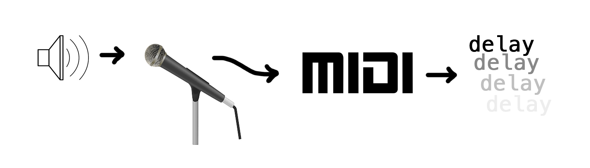

Current Projects
Super Resolution Audio Stretching (SRAS)

The ability to time stretch audio while maintaining pitch is an important tool for sound designers, musicians, and for any situation where the timing of sound elements must be synchronized to some arbitrary guideline. The most popular algorithms used today are hand-designed to interpolate the missing pieces of the lengthened audio. The results can sometimes sound metallic or unnatural, especially when the audio is stretched substantially.
I am investigating whether a convolutional neural network could be of use in this audio manipulation problem. Audio super resolution is a related task in which a higher sample rate is achieved through deep-learned manipulation of the low-resolution signal. I intend to apply the methods of audio super resolution to the task of time stretching primarily to produce higher quality time stretching, but also as a general audio experiment that may result in interesting transformations.
Pitch Mapped MIDI Delay
This project is an expressive tool for creating MIDI files from audio sources such that the MIDI instrument operates as a delay effect on the audio. This is accomplished by performing a short-time Fourier transform (STFT) on the entire audio file, and translating the resulting frequency decomposition into MIDI notes. The MIDI notes are then fed through a delay loop, creating the desired effect.
There are numerous languages that would work best for this project, such as Max/MSP or even Python. For a real-time, VST plug-in implementation, C++ would largely be the only choice. However, I decided that I would use this project as an opportunity to dive into a language I'm not familiar with and want to learn. So I wrote it in Go and am experimenting with the language's abilities in concurrency.
This Website

Responsive and well formatted on mobile devices!